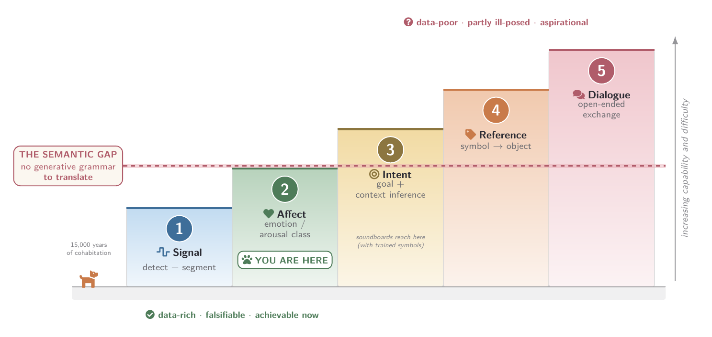
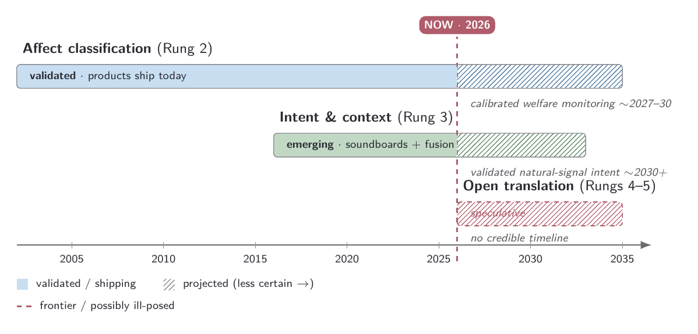

woof2word
How far are we from translating what dogs say — and is it even possible? We built a ruler, not a hype number.
woof → words? It's five questions, not one.
The Translation Ladder
"Translating a dog" is five capabilities of increasing difficulty. Today we stand on Rung 2.
So… how far?
Affect, validated
A calibrated stress/pain/welfare monitor is within reach. Useful — but not "translation."
Intent, grounded
Soundboards give a foothold. Validated natural-signal intent needs a decade of data & protocols.
Open dialogue
There may be no language there to translate. More compute won't fix a category error.
Alchemy, flight, or perpetual motion?
We don't assume the destination exists. Three historical templates adjudicate each rung.
Flight — hard but real
Declared impossible, yet sound physics. Existence proofs already in hand: vervet alarms, bee dances, dolphin whistles, canine word use.
Alchemy — a category error?
Open-ended sentence translation of a non-linguistic signal. The target may not exist; effort and scale alone won't reach it.
Perpetual motion — ruled out?
No conservation law forbids interspecies understanding. Nothing here is provably impossible.
Human translation's toolbox, audited for transfer
A decade of Transformer-lineage MT supplies the methods. We check which layers survive the jump to non-human signals (paper §2–5, Fig 1).
Survives transfer
- Self-supervised encoders — measured fine-tuning gains on BEANS / BirdSet.
- Discretization recipes — codecs turn continuous barks into reusable units.
- Interaction grounding — soundboards & CHAT tie symbols to consequences.
Does not survive
- Parallel corpora — no bark↔sentence Rosetta stone exists.
- Recursive grammar — canine displays are graded, not combinatorial.
- Fluency as fidelity — a rendered sentence is a story, not a measurement.
The Bark Lab 🐾
Pick a bark. Watch what a "translator" really does: classify affect, then add a story.
The hero figures

